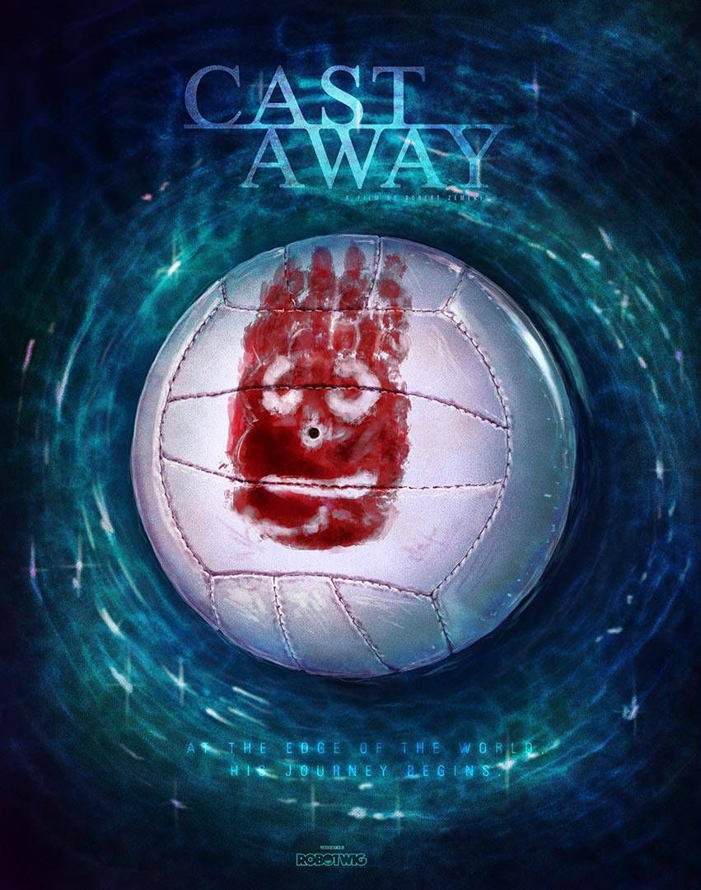

Watch Before You Die
1.The Shawshank Redemption
 de Frank….jpeg) When i first saw the film a hope was lighten in me and it given a warm feeling to me.words are not enough to say about this movie.The Shawshank Redemption is a 1994 American prison drama film written and directed by Frank Darabont, based on the 1982 Stephen King novella Rita Hayworth and Shawshank Redemption. The film tells the story of banker Andy Dufresne (Tim Robbins), who is sentenced to life in Shawshank State Penitentiary for the murders of his wife and her lover, despite his claims of innocence.
When i first saw the film a hope was lighten in me and it given a warm feeling to me.words are not enough to say about this movie.The Shawshank Redemption is a 1994 American prison drama film written and directed by Frank Darabont, based on the 1982 Stephen King novella Rita Hayworth and Shawshank Redemption. The film tells the story of banker Andy Dufresne (Tim Robbins), who is sentenced to life in Shawshank State Penitentiary for the murders of his wife and her lover, despite his claims of innocence.
2.Apocolypto
 I seen this mobie when i am 11 years old like that.it's a story about the ancient tribe.your heart beat increase like never before while watching this movie.Apocalypto (/əˌpɒkəˈlɪptoʊ/) is a 2006 American epic historical action-adventure film produced, co-written, and directed by Mel Gibson. The film features a cast of Native American and Indigenous Mexican actors consisting of Rudy Youngblood, Raoul Trujillo, Mayra Sérbulo, Dalia Hernández, Gerardo Taracena, Rodolfo Palacios, Bernardo Ruiz Juarez, Ammel Rodrigo Mendoza, Ricardo Diaz Mendoza, and Israel Contreras. Set in Yucatán around the year 1502, Apocalypto portrays the hero's journey of a young man named Jaguar Paw, a late Mesoamerican hunter and his fellow tribesmen who are captured by an invading force. After the devastation of their village, they are brought on a perilous journey to a Mayan city for human sacrifice at a time when the Mayan civilization is in decline.
I seen this mobie when i am 11 years old like that.it's a story about the ancient tribe.your heart beat increase like never before while watching this movie.Apocalypto (/əˌpɒkəˈlɪptoʊ/) is a 2006 American epic historical action-adventure film produced, co-written, and directed by Mel Gibson. The film features a cast of Native American and Indigenous Mexican actors consisting of Rudy Youngblood, Raoul Trujillo, Mayra Sérbulo, Dalia Hernández, Gerardo Taracena, Rodolfo Palacios, Bernardo Ruiz Juarez, Ammel Rodrigo Mendoza, Ricardo Diaz Mendoza, and Israel Contreras. Set in Yucatán around the year 1502, Apocalypto portrays the hero's journey of a young man named Jaguar Paw, a late Mesoamerican hunter and his fellow tribesmen who are captured by an invading force. After the devastation of their village, they are brought on a perilous journey to a Mayan city for human sacrifice at a time when the Mayan civilization is in decline.
3.Cast Away
when i watching this movie i've felt good.It always throws me into thinking about why people fight for religion,caste and politics.Cast Away is a 2000 American survival drama film directed and produced by Robert Zemeckis and starring Tom Hanks, Helen Hunt, and Nick Searcy. Hanks plays a FedEx troubleshooter who is stranded on an uninhabited island after his plane crashes in the South Pacific, and the plot focuses on his desperate attempts to survive and return home. Initial filming took place from January to March 1999 before resuming in April 2000 and concluding that May.